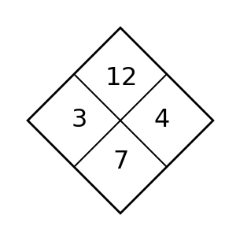
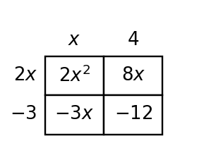

Factoring Trinomials
Mathematical idea: Factoring a trinomial reverses multiplying binomials by finding the factors that create the first term, middle term, and constant term.
Today you will connect diamond problems, product-sum reasoning, and area models. You will factor simple trinomials and trinomials where the leading coefficient is not 1.
Learning Target
Learning Target: Students will factor quadratic trinomials using patterns, products, sums, and structure.
I can statements
- I can build factored forms of quadratic trinomials using product-sum relationships.
- I can use patterns in coefficients and constants to factor quadratic trinomials.
- I can predict missing factors or terms by extending product-sum reasoning.
What's To Come
This is a long-range preview for future lessons. Do not solve it today. Instead, annotate it individually. Circle anything familiar, underline symbols or directions that seem important, and write notes about what information you think will be needed later.
As you annotate, ask yourself: What parts (words, symbols, graphs) do you KNOW? What parts look FAMILIAR? What parts look like jibberish?
Design a short diamond problem that leads to a quadratic trinomial $ax^2+bx+c$ with $a\ne 1$ and integer factors. Provide the diamond problem, the factored form, and the expanded form.
Teacher preview: Students should annotate familiar words, symbols, and representations only. Do not solve the future task here.
Intro
Directions
Read the introduction aloud with a partner or in a small group. As you read, annotate the text by highlighting important ideas, circling key vocabulary, and writing short notes about connections, questions, or predictions in the margins.
Factoring trinomials is a reverse multiplication problem. A diamond problem organizes two conditions at the same time: the top is the product and the bottom is the sum. The side numbers are useful when they satisfy both conditions.
The middle term is not random. When two binomials are multiplied, the two outside-and-inside products combine to make the middle term. Good factoring choices must create the correct first term, constant term, and middle term.
Some trinomials are easier because the leading coefficient is 1. When the leading coefficient is not 1, the first terms and last terms have more possible combinations. Splitting the middle term or using an area model can keep the reasoning organized.
Tables and diagrams help track the product-sum choices. They reduce guesswork by showing which pairs are possible before writing a factored form. They also give a structure for checking answers.
Factoring is useful because different forms reveal different information. In later sections, factored form will help identify zeros of quadratic functions and connect algebra to graphs.
Teacher: Listen for students citing the paragraph language and connecting it to a representation or algebraic structure.
Stop and Discuss
- What information does a diamond problem organize?
- Why does the middle term matter when factoring a trinomial?
- Why can a trinomial with $a e 1$ require more than guessing two binomials?
Teacher answers: Q1 is directly answered in paragraph A; Q2 is directly answered in paragraph B; Q3 is inferred from paragraph C. Follow-up: ask students to underline the evidence sentence before sharing.
A diamond problem asks for two numbers with a target product and a target sum.
$$3\cdot4=12 \qquad 3+4=7$$| Target | Value |
|---|---|
| Product | 12 |
| Sum | 7 |
| Number pair | 3 and 4 |

Context: The pair 3 and 4 becomes useful because it satisfies both requirements.
Example 1: Complete a Diamond Problem
The top of a diamond is 18 and the bottom is 9.
Find two integers that multiply to 18 and add to 9.
- List factor pairs of 18.
- Which pair has sum 9?
- How could that pair help factor a trinomial?
Teacher answer key: 3 and 6; useful for $x^2+9x+18$. Misconception watch: ask students to justify each step with structure, not only a final answer.
You Try It 1: Complete a Product-Sum Puzzle
The top of a diamond is 24 and the bottom is 10.
Find two integers that multiply to 24 and add to 10.
- List possible pairs.
- Choose the pair with sum 10.
- State one trinomial this pair could help factor.
Teacher answer key: 4 and 6; example trinomial $x^2+10x+24$. Follow-up: ask students which part matched the example and which number changed.
Stop and Discuss
- What mathematical structure did Example 1 and You Try It 1 have in common?
- What check would convince you that the answer is reasonable?
Teacher discussion note: Both tasks require matching product and sum at the same time. Ask students to point to a term, factor, feature, or graph evidence.
Factoring reverses the distributive products that make a trinomial.
$$(x+3)(x+5)=x^2+8x+15$$| Product part | Value |
|---|---|
| First | $x^2$ |
| Outside + inside | $5x+3x=8x$ |
| Last | $15$ |

Context: The middle coefficient 8 comes from the two rectangular middle products.
Example 2: Factor Simple Trinomials
Factor $x^2+11x+30$ and $x^2-x-20$.
Use product-sum reasoning for each trinomial.
- Find the needed product and sum for each.
- Write each factored form.
- Multiply one answer back to check.
Teacher answer key: $(x+5)(x+6)$ and $(x-5)(x+4)$. Misconception watch: ask students to justify each step with structure, not only a final answer.
You Try It 2: Factor Two Trinomials
Factor $x^2+7x+12$ and $x^2-2x-35$.
Use product-sum reasoning, then check one answer.
- Find the needed pair for each trinomial.
- Write both factored forms.
- Check one product by multiplying.
Teacher answer key: $(x+3)(x+4)$ and $(x-7)(x+5)$. Follow-up: ask students which part matched the example and which number changed.
Stop and Discuss
- What mathematical structure did Example 2 and You Try It 2 have in common?
- What check would convince you that the answer is reasonable?
Teacher discussion note: The signs of the factor pair determine the signs in the binomials. Ask students to point to a term, factor, feature, or graph evidence.
When the leading coefficient is not 1, split the middle term using numbers whose product is $ac$ and whose sum is $b$.
$$2x^2+5x-12=2x^2+8x-3x-12=(2x-3)(x+4)$$| Value | Meaning |
|---|---|
| $ac$ | $2\cdot(-12)=-24$ |
| Needed sum | $5$ |
| Pair | $8$ and $-3$ |

Context: Splitting the middle term makes each group share a factor.
Example 3: Split the Middle Term
Factor $2x^2+9x+10$.
Use $ac$ and the middle coefficient to split the middle term.
| Value | Result |
|---|---|
| $ac$ | _____ |
| Needed sum | _____ |
| Number pair | _____ |
- Complete the table.
- Rewrite the middle term.
- Factor by grouping.
Teacher answer key: $ac=20$, sum 9, pair 4 and 5; $(2x+5)(x+2)$. Misconception watch: ask students to justify each step with structure, not only a final answer.
You Try It 3: Use Grouping
Factor $3x^2+13x+4$.
Split the middle term using $ac$.
| Value | Result |
|---|---|
| $ac$ | _____ |
| Needed sum | _____ |
| Number pair | _____ |
- Complete the table.
- Rewrite the middle term.
- Factor by grouping.
Teacher answer key: $ac=12$, sum 13, pair 12 and 1; $(3x+1)(x+4)$. Follow-up: ask students which part matched the example and which number changed.
Stop and Discuss
- What mathematical structure did Example 3 and You Try It 3 have in common?
- What check would convince you that the answer is reasonable?
Teacher discussion note: Splitting the middle term makes the grouping structure visible. Ask students to point to a term, factor, feature, or graph evidence.
Example 4: Plan Before Factoring
You need to factor $4x^2-4x-15$.
Build a strategy before writing the final factors.
- Find $ac$ and the needed sum.
- Choose the pair that splits the middle term.
- Write and check the factored form.
Teacher answer key: $ac=-60$, sum -4, pair -10 and 6; $(2x+3)(2x-5)$. Misconception watch: ask students to justify each step with structure, not only a final answer.
You Try It 4: Construct a Strategy
You need to factor $6x^2+x-12$.
Plan the product-sum split before factoring.
- Find $ac$ and the needed sum.
- Identify a pair that works.
- Write and check the factored form.
Teacher answer key: $ac=-72$, sum 1, pair 9 and -8; $(3x-4)(2x+3)$. Follow-up: ask students which part matched the example and which number changed.
Stop and Discuss
- What mathematical structure did Example 4 and You Try It 4 have in common?
- What check would convince you that the answer is reasonable?
Teacher discussion note: A strategy table can prevent random guessing. Ask students to point to a term, factor, feature, or graph evidence.
Summary
A trinomial can be factored by finding products and sums that match its coefficients.
Diamond problems organize the product and sum conditions before a factored form is written.
Area models show how first, outside, inside, and last products combine into a trinomial.
When the leading coefficient is not 1, splitting the middle term can make the structure easier to factor correctly.
Common Mistakes
- Using only the product. Why it is tempting: a pair may multiply correctly but add incorrectly. What to check instead: check both the product and the sum before writing factors.
- Ignoring the sign of c. Why it is tempting: positive and negative constants change possible pairs. What to check instead: list pairs with signs attached.
- Guessing without checking. Why it is tempting: a binomial pair can look reasonable. What to check instead: multiply the factors back to confirm all three terms.
- Forgetting to split b. Why it is tempting: students try simple factoring even when $a e 1$. What to check instead: use $ac$ and the middle coefficient to organize the split.
- Dropping a factor. Why it is tempting: grouping may leave out a common binomial. What to check instead: make sure both groups produce the same binomial factor.
Optional Future Task Reflection
Look back at the future task. Do not solve it yet. Highlight one part that makes more sense now than it did at the beginning. Circle one part that still feels unfamiliar. Write one sentence about what representation you would look at first.
Complete the diamond problem. The top is the product and the bottom is the sum.

Factor each quadratic completely. If it is not factorable over the integers, explain why not.
- $2x^2+3x-5$
- $x^2-x-6$
- $3x^2+13x+4$
- $2x^2+5x+7$
What is one idea about factoring quadratic trinomials you understand better now than at the start of class? Write at least one complete sentence.
What is one thing about factoring quadratic trinomials you still want to understand or practice? Be specific — name the idea, not just "everything."